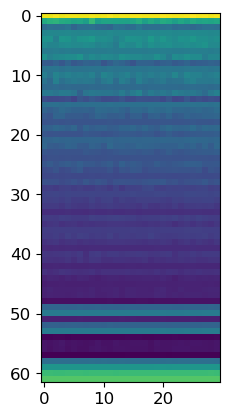
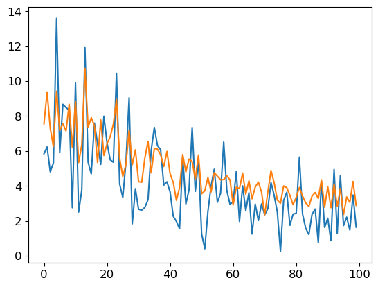

from wcpdtoolbox.visualization import *
# from fastai.callback.hook import *
from fastai.test_utils import *
model = resnet18().cuda()模型的解释
尝试制作一个用于解释模型的组件
对于一个模型,我们可以轻易查看它的输入和输出.但是,它的中间层仍然对我不可知.
现在,我需要克服这个缺陷
Summary Model
观察模型各层的grad
c = L()adam = Adam(model.parameters(), 1e-4)for i in range(30):
l = L()
x = model(torch.randn(20,3,64,64).cuda())
x.sum().abs().backward()
adam.step()
for i in model.parameters():
l.append(i)
l = l.map(lambda x:to_detach(x.grad.abs().mean()))
model.zero_grad()
c.append(l)
c2 = c.copy()
c2.reverse()
plt.imshow(np.log1p(array(c2).T))
plt.show()
print(x.sum())MIOpen(HIP): Warning [SQLiteBase] Missing system database file: gfx1030_16.kdb Performance may degrade. Please follow instructions to install: https://github.com/ROCmSoftwarePlatform/MIOpen#installing-miopen-kernels-package
tensor(-74.4779, device='cuda:0', grad_fn=<SumBackward0>)这样就可以看见它的梯度了,不过依然没有名字
制作一个显示梯度的callback
learner = synth_learner()class GradShowCallback(Callback):
def __init__(self, l, **kwargs):
assert not kwargs, f'Passed unknown events: {kwargs}'
self.grad_list = l
def before_step(self):
k = L([to_detach(i.grad.abs().mean()) for i in self.learn.model.parameters()])
self.grad_list.append(k)
def after_fit(self):
[plt.plot(i) for i in array(self.grad_list).T]
plt.show()l = L()learner.fit_one_cycle(10, cbs=GradShowCallback(l))| epoch | train_loss | valid_loss | time |
|---|---|---|---|
| 0 | 25.333673 | 27.027384 | 00:00 |
| 1 | 23.795195 | 21.430862 | 00:00 |
| 2 | 20.932470 | 15.259192 | 00:00 |
| 3 | 17.989950 | 11.353888 | 00:00 |
| 4 | 15.402375 | 8.668013 | 00:00 |
| 5 | 13.202624 | 6.830383 | 00:00 |
| 6 | 11.358438 | 5.623485 | 00:00 |
| 7 | 9.841968 | 4.950937 | 00:00 |
| 8 | 8.626709 | 4.664057 | 00:00 |
| 9 | 7.678516 | 4.614231 | 00:00 |

更新:
from plotly import graph_objects as goclass GradShowCallback(Callback):
def __init__(self,l=None, show=True):
self.grad_list = L() if l is None else l
self.show = show
def before_step(self):
grads = []
for i in self.learn.model.parameters():
if not i.grad is None:
grads.append(to_detach(i.grad.abs().mean()))
else:
grads.append(tensor(0.))
self.grad_list.append(grads)
def after_fit(self):
if not self.show:
return
fig = go.Figure()
name = [name for name, _ in self.learn.model.named_parameters()]
arr = array(self.grad_list).T
x = np.arange(len(self.grad_list))
for a,n in zip(arr, name):
fig.add_trace(go.Scatter(x=x, y=a, name=n))
fig.show()learner = synth_learner()learner.fit_one_cycle(10, cbs=GradShowCallback(l))| epoch | train_loss | valid_loss | time |
|---|---|---|---|
| 0 | 15.332655 | 15.399384 | 00:00 |
| 1 | 14.451164 | 12.325535 | 00:00 |
| 2 | 12.793344 | 8.908071 | 00:00 |
| 3 | 11.070920 | 6.616061 | 00:00 |
| 4 | 9.531049 | 5.079659 | 00:00 |
| 5 | 8.209394 | 4.044551 | 00:00 |
| 6 | 7.098516 | 3.371369 | 00:00 |
| 7 | 6.185102 | 2.984177 | 00:00 |
| 8 | 5.451753 | 2.818964 | 00:00 |
| 9 | 4.879062 | 2.789715 | 00:00 |